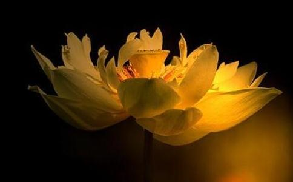

今天又是六月十九了,这个日子我将永远难忘,因为就在这一天,我正式走上了
我从小即对观世音
但是好多年里我却一直没有接触过
一直到去年的今天。
那是我毕业后的第四个年头,单位宿舍调整,我被安排到一间向阳而没有阳台的房间,风扇时好时坏,没有空调,去年的夏天又是出奇得热,热到学校都停课的地步,那间屋有似蒸包子的蒸笼,又加上楼下小商小贩过半夜不睡,甚或吵架骂街,一向嗜睡的我居然会彻夜难眠。于是接下来我便在办公室睡行军床。
在六月十九这天,睡午觉时行军床突然塌了,把我左脚的大拇指指甲砸了下来,现在想想应该是惩罚我,因为去年是我长这么大过得最堕落的一年,杀盗淫妄的念头最盛的一年,吃肉吃的最疯的一年,脾气最暴躁的一年,身体素质最差的一年。原本我是不大吃肉的,可是去年上半年疯了般得吃;我从来没发过烧,去年高烧两次;浏览不
那天晚上我在办公室怎么也睡不着,起来上网,不知道为什么,特别想听佛乐,就下载了很多,然后就搜净空法师的视频,开始就是老法师讲《
连着看完了所有的视频,然后买了书,并开始背诵,背过了前两训,我相信里面的每一个字,我愿意完全照着做,当时我就后悔为什么早没有看到这样的书!要是早看到我可以少走多少弯路,少造多少业!
我感谢观世音菩萨引导我走上了正路!
断恶修善 从那时开始,我便时时注意身、口、意三业,因为我很喜欢古典文学,所以对于书的道理很轻易就懂了,再加上老法师深入浅出的讲解,理上是没问题了。然而,理可顿悟,事须渐断,在日常
真的是百炼钢化为绕指柔,那种舒服,非亲历者不能知道。从此后心量大开,有时工作需要,脸上纵然有怒色,心却完全不动,真是不动真怒了。偶尔有控制不住时,总能在第一时间醒悟,立马转念,正所谓不怕妄念起,只怕觉悟迟。
其它恶习也一一大力去改,不件件详叙。
消除业障 以前去山东庆云海岛金山寺做过一次早课,可能机缘未成熟,没有开始正修。直到有一次我去一家佛教用品店修
国庆节便去齐河的定慧寺做义工,干了一天活之后,晚上在寮房中得一梦,梦见有一
然而,第二天早上两点四十,闹钟还没响,我自己即醒,头脑清醒,浑身轻快。当时即欣喜,想到《了凡四训》中讲得“梦吐黑物”乃“过消罪减”之兆,方悟昨夜之梦乃大大得好梦,至于受一天的
后来还一次在寺里住,仍梦见这个出家人,这次即心里明白知道是六祖
这次离开寺即断肉食,且说断即断,没任何犹豫,非常彻底。大约半月后,即觉身轻体健,上六楼不再大喘气。以前不知道到底可不可以吃肉,因为发现藏传佛教是吃肉的,后来看到《
我非常喜欢
至于净空老法师的话,没有做到全听全信,老法师专弘
直到那么一天,我自己说服了自己。
我是做老师的,在给学生讲某一类题的时候,我自己总结了一个方法,那就是什么想法都别起,只对照原文找答案,每个选项每句话都如此。只要一觉得自己很有见解,想动脑子推理推理,必定错。因此法太简单,学生大多不接受,或者说口头上接受,具体做时根本不落实,甚至认为这种方法根本就是闹着玩儿,怎么可能不动脑子反倒对,动脑子反倒错?但是我知道这是好方法,而且也有听话的同学照着做,这类题不再出错,于是便碰到即重复讲这个方法,终于有一天,我正重复着不知第几遍呢,脑子突然转到佛法上:老法师教的法门不就是如此吗?简单而有效,我不也是一直没落实好吗?没有做到百分之百的相信吗?怎么能怪学生不接受?当时不觉微笑,嘴上仍重复要求学生以后按这个方法就肯定没错,心里打定了主意:今后专修净土。
为了坚定信念,我又看了虚云老和尚和宣化上人的开示,结果他们在打禅七的开示里,都讲道,这个时代我们的根性最适合修
正式学佛后,即开始落实布施与放生,这两件事是越做越
先说放生,一开始只是二十元左右,放小乌龟,坚持每周放,除了冬天冷,没放。到了今年春天,有一天在菜市场发现有一人卖野生鲫鱼,是郊区清理湖清理出来的,当时决定全要,一百七八十块钱好像。第二天又有差不多那么多,我依然全要,然后就没有了,因为我去他家把所有的存货都买了,他也是有郊区的朋友转给他的,就这么多。从那开始,手就放开了,一次几百都无所谓。
有一次在另一个菜市场发现有一家卖鱼的,偶尔会有野生甲鱼卖,每天或隔几天会弄到一两只,我便每天去看,有即买。那段日子一周有四五天每天需花二百块钱左右,我一个月工资只有三千略出头,每天只有一百块钱,哪里能满足每天放生的需求呢?但是每周就是依然有余钱入库,放生,真得会越放越富有!
不单得财,还得健康。我从出娘胎即有一个咳嗽的病根,每年春末夏初,秋末冬初,必定咳嗽半月二十天左右,而今年,只咳嗽了三天!当时正在定慧寺做义工,嗓子微感不适,偶尔咳一两声,一直咳不起来。回单位上班后,才开始略加厉害,也只是频率高点而已,不像以前咳得浑身疼。然而只三天,并且这三天里本来有个额外的苦差事要让我做,因咳嗽,换了别人,三天后一点儿症状都没了。有一次可能是感冒,结果头不疼不晕,鼻不堵,嗓子不干,但心里明白是感冒了,可是把症状一说,朋友都笑说,这哪是感冒?我想,这本来该受苦的,现在意思意思而已。
布施也是如此,街边有好多露宿街头的乞丐,不是骗人的那种,一开始给五元十元,后来给一百二百也是不思考,经常是随手掏出来就给,不看多少。有一位女乞丐,四十岁左右,可能年轻时入过风流行当,纹着眉,现在露宿马路,依然很注意保护自己的脸,不愿意晒黑。她每次都点名要吃点心,喝奶茶,一开始我觉得都要着吃了还这么讲究,我自己都吃馒头喝白开水呢,但觉得她也够可怜的,也许是佛菩萨在考验我呢,便也每次都照办。
元旦晚上从路边过,她见了我便很欢喜,满脸推笑地说“新年快乐”,那是我觉得最真诚的祝福了。冬天她依然穿拖鞋,脚都冻了。给她买了棉鞋,她说不喜欢穿红的,我只好再买双别的,真是女人啊!到这时候还这么讲究!有一天很冷,我回家必经她在的地方,她说手快冻了,我当时刚买了副手套,便摘下来给了她,心里想,我不再买手套了,如果佛菩萨护佑我,我一定不会冻手,结果我骑自行车上班半个冬天,手一点事儿没有!
到今天,整一年了,我的人生整个儿敞亮起来,身体好了,多年的失眠好了,夜梦安详或压根儿无梦了,事业顺利了,学佛也成了日常生活的重要部分了。感恩老法师,是师父援手救我于水深火热之中,救我于三恶道之中,我愿意做老法师的
阿弥陀佛!